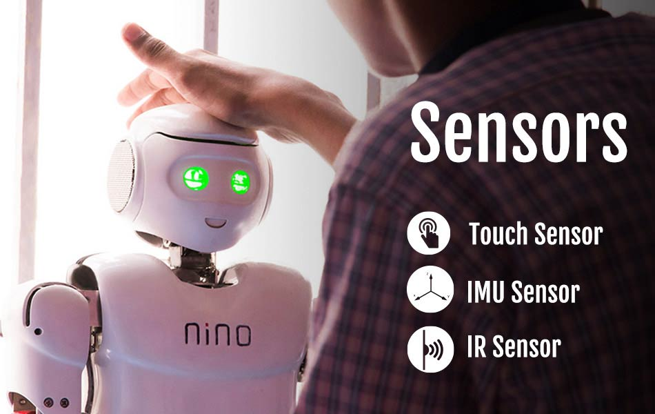
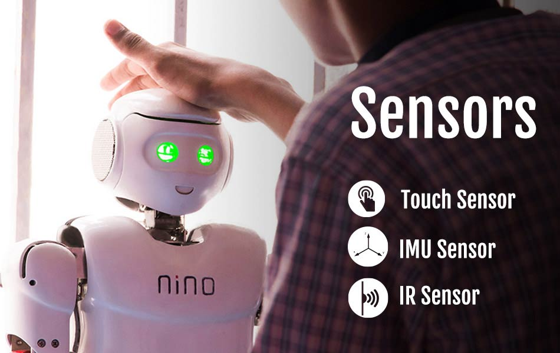

NINO - The humanoid robot: Humanoid robots are professional service robots built to mimic human motion and interaction, they're now starting to become commercially viable in a wide range of applications.Humanoid robots are being used in the inspection, maintenance and disaster response at power plants to relieve human workers of laborious and dangerous tasks. Nino is a humanoid that can talk, walk, dance, sing, play and work wonders with its inherently built intelligence. For each concept that a teacher covers in her classroom, Nino has a set of innovative, developmentally appropriate, hands-on, experiential and interactive activities, stories, poems and projects that can be used to introduce, strengthen, summarize and assess concepts. On one hand, Nino acts as an assistant-teacher and on the other, it works with each child as a buddy.
Features:
- 1-Day Workshop
- In colabaration with Finer Aspects Digi
- Demonstration of Humanoids
- Features of Humanoids
- Callibration of Humanoids
- Interaction with Humanoid